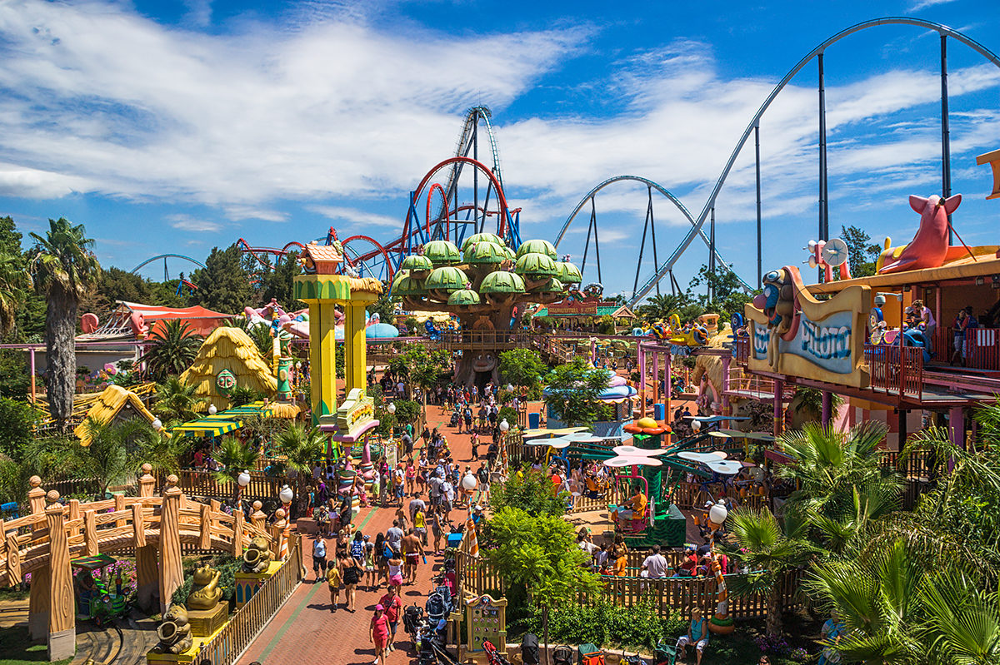

Парк развлечений Порт Авентура (PortAventura) находится в Испании, в городе Салоу, который расположен недалеко от Барселоны. Это самый популярный испанский семейный парк отдыха и курорт, в котором ежегодно отдыхают свыше трех миллионов туристов со всего мира, что также делает его шестым по посещаемости развлекательным парком в Европе. Комплекс Порт Авентура открылся в 1995 году и сейчас занимает территорию площадью 117 гектаров, где располагается более 40 аттракционов. Кроме собственно парка аттракционов, комплекс включает огромный аквапарк Порт Авентура Акватик (PortAventura Aquatic), несколько пляжных клубов и полей для гольфа, четыре отеля, на его территории находится озеро площадью 3 гектара.
Развлекательный комплекс поделен на 6 уникальных областей: